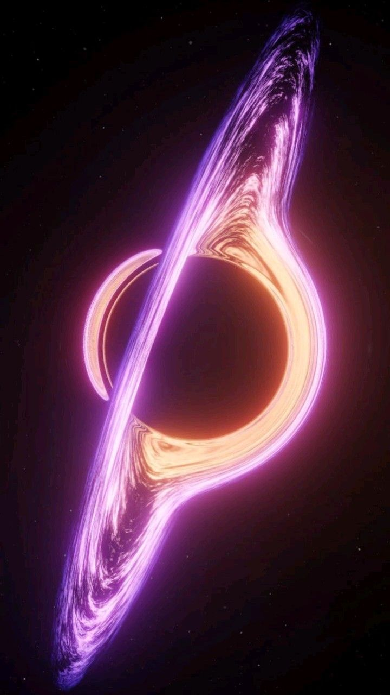

My surprise websites!
Profile
本店專門為喜好娃娃收藏的消費者，準備五花八門的娃娃種類， 包括可愛公仔吊飾、以及BJD娃娃等，任君挑選。 若需參考其他項目，可至最新動態查詢。
Dolls

讓娃娃不只是玩具用途！
更有趣的是，身為娃娃死忠粉絲的你還可以把娃娃當你的「家人」或「寵物」到四處遊走， 到一個網美夢幻基地，主人你就是攝影師，娃娃就是小麻豆，拍照做成寫真集留念！
Charms

本店亦提供，客製化吊飾製作的服務，如有需要請洽官方網站聯絡！
店長將會為您精心設計一套最顯眼、最閃亮、最適合當包包朋友們的吊飾！
Stories
The beginning of the store
為何選擇創業
 grade
我的創業源頭是出自於自身興趣，從「大老久以前」就是超級娃娃控，開始喜歡填充絨毛娃娃(其實到現在還是一直親吻我的絨毛娃娃)。
直到編髮書內容再加上編髮網美影片研究久了，才開始喜歡有仿真頭髮的人型娃娃，並試著練習。
grade
我的創業源頭是出自於自身興趣，從「大老久以前」就是超級娃娃控，開始喜歡填充絨毛娃娃(其實到現在還是一直親吻我的絨毛娃娃)。
直到編髮書內容再加上編髮網美影片研究久了，才開始喜歡有仿真頭髮的人型娃娃，並試著練習。
grade 現在開始也常接觸時尚方面的資訊，更學會拿針縫娃娃的衣服，如果以後我有一台專屬的縫紉機，就能進一步研究衣服的架構哲學！
grade 我有一項小專長，是我高職暑假生涯期間，用緞帶拆開成絲狀，在使用保麗龍膠黏製成頭髮，黏在娃娃上十分搶眼，成為我愛不釋手的娃娃之一。
(注意事項：不是所有的娃娃都適合用頭髮！)
Accesories


以上特色商品僅為展覽用途
客製化商品


grade 本吊飾以獨特的黑色假皮毛為基底，大家勢必想如果自己的背包吊飾只有單調沒裝飾的黑色皮毛球絕對大單調， 細心的店長特地為許多愛美、愛豪華的故舍選的高諄項鍊的珍珠作為主莊市區，再搭陪其他鑽石飾品，店長相信顧客得到這意想不到的禮物之後，肯定歡天喜地！
The latest
順便分享一下，這張富有能量感的宇宙圖，相當適合在看書前補充宇宙的能量！